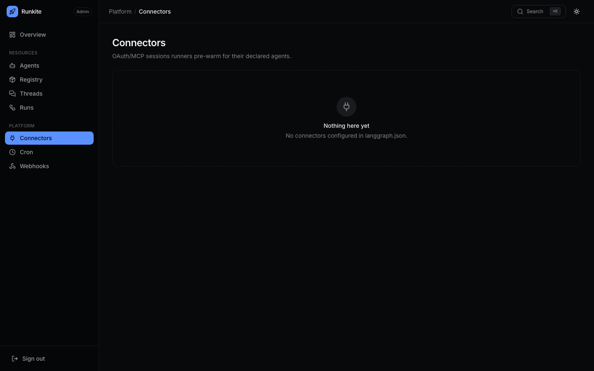
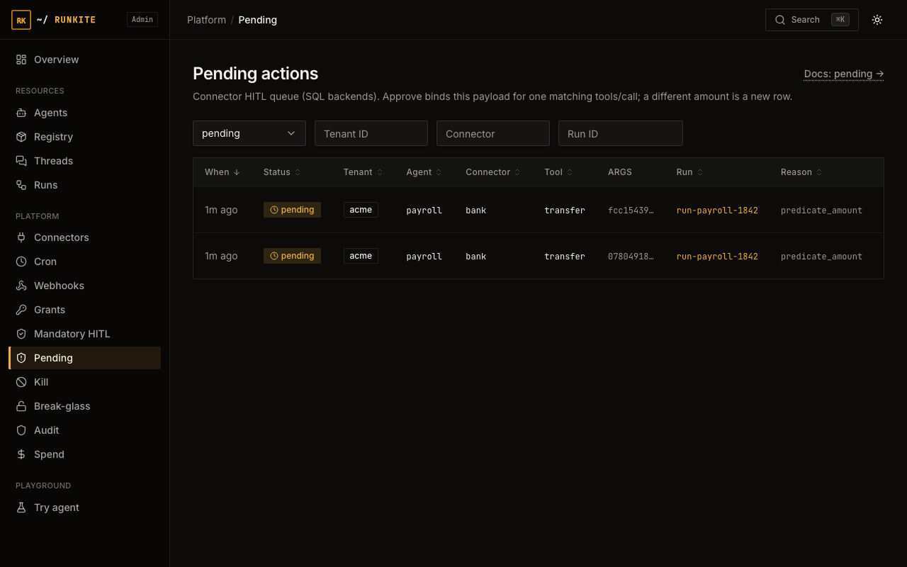

Connectors & HITL
A connector gives an agent a run-bound route to an outside service, such as Salesforce, GitHub or your own API. For MCP connectors, the plane holds the credential and forwards allowed calls. A connector without MCP can return credentials to a trusted runner. The plane can require human approval before a governed call proceeds. This page is the full setup: configure one, control which of its tools an agent can use, and turn on human approval.
Why route through a connector instead of just calling the API directly?
Nothing stops your agent code from calling an external API directly with its own hardcoded key, that's not something the plane can prevent. The reason to go through an MCP connector instead: the upstream credential stays in the plane, and each mediated call is tied to the run that made it, so its audit has a caller, and you get tool-level allow/deny lists and human-approval gates for free, enforced by the plane instead of by code inside every agent.
Step 1: configure the connector
A connector is a small YAML file, referenced by name from langgraph.json.
This example assumes you have deployed an MCP server for Salesforce with the
named tools and configured Salesforce OAuth client credentials:
# connectors/salesforce.yaml
auth:
type: oauth2_client_credentials
token_url: https://login.salesforce.com/services/oauth2/token
client_id: ${SF_CLIENT_ID}
client_secret: ${SF_CLIENT_SECRET}
mcp:
url: http://salesforce-mcp:8080/mcp
tools:
allow: [soqlQuery, getObjectSchema]
deny: [deleteRecord, bulkUpdate]
errors:
INSUFFICIENT_ACCESS: "You don't have permission for this Salesforce object."
Then point langgraph.json at it:
{
"connectors": {
"salesforce": { "config_ref": "./connectors/salesforce.yaml" }
}
}
What each part means:
-
auth.type: how the plane authenticates to the downstream service. Four supported types:oauth2_client_credentials(a service-to-service OAuth client, e.g. Salesforce/most enterprise APIs),oauth2_token_exchange(swap the end-user's own SSO token for a downstream one, use this when the call should run "as the user", not as a generic service account),api_key, andbearer(a static credential, simplest option, for APIs that just take a header). -
${SF_CLIENT_ID}/${SF_CLIENT_SECRET}: these get substituted from environment variables when the config loads. Never put a real secret directly in the YAML file. See Secrets for a second option (auth.secret_ref) that fetches the credential fresh from Vault or a file each time a session is minted, instead of baking it into memory at startup, useful if you rotate credentials without wanting to restart the control plane. -
mcp.url: set this if the downstream service speaks MCP (Model Context Protocol). The plane proxies every call through itself rather than handing your agent the real MCP URL, that's what makes thetools.allow/tools.denylist below actually enforceable instead of just advisory. -
tools.allow/tools.deny: restrict which MCP tools this connector exposes. This is a real, enforced gate: a denied tool call is rejected by the plane and never reaches the downstream server at all. Usedenyalone to block a specific handful of dangerous tools while allowing everything else; useallowto only permit an explicit, short list. -
errors: optional. Maps a raw error code from the downstream service to a friendlier message your agent (or its end user) sees instead of a cryptic upstream error string.
Step 2: a network hiccup shouldn't take down every agent
Every OAuth connector automatically gets a circuit breaker around its token-fetch call, you don't configure this to turn it on, only to tune it:
circuit_breaker: failure_threshold: 5 # consecutive failures before it trips open (default: 5) cooldown_seconds: 30 # how long it stays open before trying again (default: 30)
In plain terms: if Salesforce's login endpoint is down and 5 calls in a row fail, the breaker "opens", every further call fails instantly (no network attempt, no waiting for a timeout) for 30 seconds, so one broken downstream service can't slow down every agent that happens to use it. After the cooldown, it lets one call through as a test; if that succeeds, it closes and traffic flows normally again. You can watch this state live in Admin → Connectors.
Step 3: call it from your agent code
Use the MCP proxy helper with the node's own config. It attaches the current run binding and mints the short-lived connector capability. Match the tool name and argument schema advertised by your upstream server:
# Python (inside a graph node)
from runkite_runner.connectors import proxy_connector_mcp
async def my_node(state, config):
reply = await proxy_connector_mcp(config, "salesforce", {
"jsonrpc": "2.0",
"id": 1,
"method": "tools/call",
"params": {
"name": "soqlQuery",
"arguments": {"query": "SELECT Id, Name FROM Account LIMIT 10"},
},
})
# Handle a JSON-RPC error or tool result before continuing.
return {"salesforce_reply": reply}
// TypeScript
import { proxyConnectorMcp } from "runkite-runner";
const reply = await proxyConnectorMcp(config, "salesforce", {
jsonrpc: "2.0",
id: 1,
method: "tools/call",
params: {
name: "soqlQuery",
arguments: { query: "SELECT Id, Name FROM Account LIMIT 10" },
},
});
// Handle a JSON-RPC error or tool result before continuing.
A pending or denied policy decision is returned to the caller; the helper does
not pause your framework or retry approval for you. For a connector without MCP,
get_connector_session / getConnectorSession returns the
session object to the trusted runner, which then calls the service itself.
Unreleased helper hardening: one deadline covers session
minting, any safe renewal, the MCP request and its response body. Defaults are
30 seconds for a session operation and 60 seconds for MCP. Pass a TypeScript
managed factory's signal to cancel in-flight delivery; Python
callers can cancel the coroutine normally. Redirects are refused. A timeout
or cancellation does not prove that an external tool did not execute.
The plane's JSON MCP and OAuth token clients also refuse redirects; negotiated MCP already did. Configure the final MCP and token endpoint URLs so a redirect cannot move credentials or a tool-call body to another host.
Upgrade the plane before the helpers. Automatic renewal is allowed once only
for the plane's pre-dispatch 401 connector_session_invalid, and
only when the helper minted the token. A bare 401 is not a retry
instruction. An upstream 401 becomes
502 connector_upstream_unauthorized; that call may already have
executed, so neither the plane nor the helper automatically repeats it.
Use downstream idempotency when your application decides how to recover.

Upstream MCP transport
Since v0.5.6, mcp.transport: streamable_http opts a connector into
upstream MCP negotiation, session headers and POST SSE response decoding. Omitted
or json keeps the existing single JSON POST. Each operation opens and
closes its own upstream session; cross-call subscriptions, sampling and elicitation
are not exposed. The runner-facing connector reply and public Agent Protocol
/mcp route remain JSON. This flag changes only the connector's
upstream transport.
mcp: url: http://your-mcp-service:8080/mcp transport: streamable_http
One strict parse drives policy and forwarding. Duplicate or case-conflicting protocol keys are rejected; argument key case stays intact. Requests are capped at 1 MiB, MCP responses at 8 MiB and OAuth token responses at 1 MiB. An oversized result can fail after the tool has executed, so do not automatically retry a write. Upstream negotiation/operation share a 30-second deadline and reconnect retries are disabled. See the source transport guide.
The unreleased argument parser also rejects duplicate keys inside arguments
and invalid Unicode, including unpaired surrogate escapes, with HTTP
400 before policy evaluation or upstream execution. MCP
tools/call arguments, when present, must be a JSON object;
a string containing encoded JSON is not a substitute.
What "run-bound" actually means (and why you'll see a 401 if you skip it)
A connector session is only ever minted for a run that's actually in progress
right now, the plane will not hand out credentials to a bare request that just
has a runner token and nothing else. This is why the SDK helpers above matter:
they automatically read the current run's ID and "generation" (a fencing number
that changes if the run gets reassigned to a different worker) from the graph
config and attach them as headers. If you ever bypass the helper and call the
session endpoint directly without those headers, you'll get
401 run_binding_required: that's the plane refusing to hand out a
credential with no run to attach it to, not a bug.
Step 4: decide who's allowed to use this connector at all
With a policy section configured, including "policy": {},
a connector call is denied until you explicitly grant
it. You can grant in config (fixed at deploy time) or in Admin (changeable live,
no redeploy):
# langgraph.json, static grant, baked in at deploy time
"policy": {
"grants": [
{ "tenant_id": "default", "agent_id": "sales-assistant", "connector": "salesforce" }
]
}
Or open Admin → Grants, click "New grant," and pick the tenant / agent / connector. Admin grants roll out to every control-plane replica within about 15 seconds, no restart needed. Use config for grants you always want; use Admin for grants you're experimenting with or need to change without a deploy.
Step 4b (optional), gate on the argument, not just the tool name
Grants are name-only. To pending or deny from a field inside tools/call
(for example amount > 100), add policy.predicates in
langgraph.json and restart the control plane. This is config-only, there
is no Admin form for it. It applies only to connector MCP, before the downstream call.
Under the threshold the tool still runs; over it, Admin → Pending, and the amount is
on Admin → Audit (hover Args). Full example:
Grants & HITL.
Unreleased predicate evaluation compares numeric values exactly rather than
rounding them through a floating-point value. Equivalent spellings such as
1 and 1.0 match; neighboring large integers remain
distinct. A current explicit deny cannot be bypassed by consuming an older
approval. Before upgrading, read the
approval resubmission requirement.
# langgraph.json, after the grant above
"predicates": [
{
"id": "update-over-100",
"tenant_id": "default",
"agent_id": "sales-assistant",
"connector": "salesforce",
"tool": "updateRecord",
"when": { "path": "amount", "op": "gt", "value": 100 },
"effect": "pending",
"reason_code": "predicate_amount"
}
]
Step 4c (optional), cap oversized MCP results
payload_shrink in the first langgraph.json can stash a large
connector tools/call result in Redis and return a preview plus
runkite_retrieve_payload. Off by default. Needs REDIS_URL.
In-graph tools never go through this path. Audit for that hop keeps the preview,
not the original body. Token spend moves only if the runner reports fewer tokens;
shrink does not write usage_events.
Step 5 (optional), force a human to approve first
For anything you never want an agent doing fully on its own, sending an email, approving a refund, deleting a record, add a mandatory human-in-the-loop (HITL) rule. A matching connector call is held before its side effect and returns pending. Your agent or application must handle that outcome and decide how to pause, retry or resume its own workflow.
# langgraph.json, every call to salesforce's deleteRecord tool must be approved
"policy": {
"mandatory_hitl": [
{ "tenant_id": "default", "connector": "salesforce", "tools": ["deleteRecord"] }
]
}
Leave out tools to require approval for every tool on that connector. You can also create these rules from Admin → Mandatory HITL without a redeploy.
What actually happens when this fires, end to end:
- Your agent tries to call the gated tool (e.g.
deleteRecord). - Instead of running, the call is refused with JSON-RPC pending and shows up in Admin → Pending (connector, tool, reason, and the triggering display map on the Args column).
- A human clicks Approve or Deny in Admin (or your own tooling can call the same API).
- Approved: a one-shot permission enables the next matching connector call with the same tenant, agent and argument digest. A different payload does not consume it. Denied: the caller must not perform that write and decides how to continue. The caller must retry under the original active run/generation. Neither Admin action automatically executes the tool or resumes a run.
- This is a one-time unlock, not a standing exception, the very next time the agent tries the same tool, it pauses again. If you want it to stop pausing permanently, remove the mandatory HITL rule instead.

What to expect
- "My grant isn't taking effect.": if you added it in Admin on a different replica than the one serving your traffic, give it up to ~15 seconds to propagate.
- "Nothing happened when my agent called the tool.": check Admin → Pending first; it's very likely paused there waiting for approval, not silently failed.
- MCP credentials stay on the plane:
GetSessionand the connector status endpoint never hand back a connector's raw downstream URL when MCP is configured, and MCP session tokens are 15-minute, run-bound, and single-purpose. This does not stop your own agent code from independently having a different, hardcoded credential to the same service, the plane can only govern access it hands out itself. - A cached OAuth token keeps working even mid-outage: if the token refresh endpoint is down and the breaker trips, a still-valid cached token keeps being served; only new token fetches fail fast.
Reference: docs/connectors.md · docs/trust-governance.md · Secrets (env / file / Vault) · Admin UI guide · Try HITL path